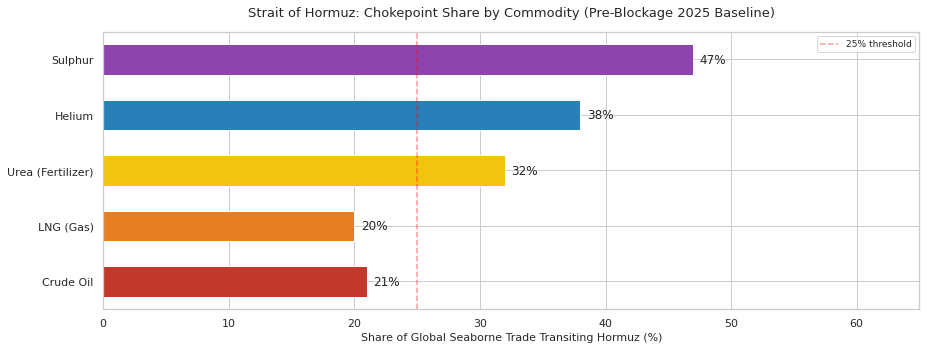
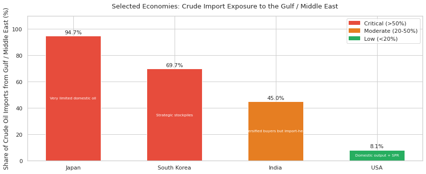
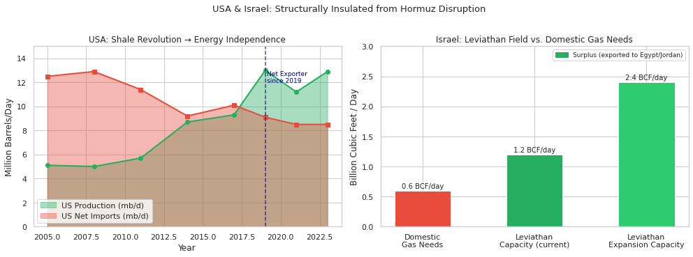
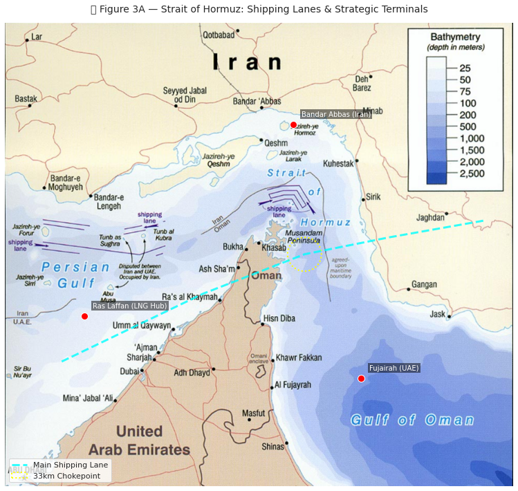
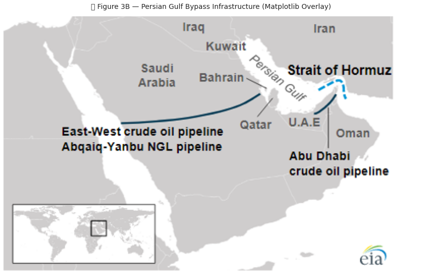
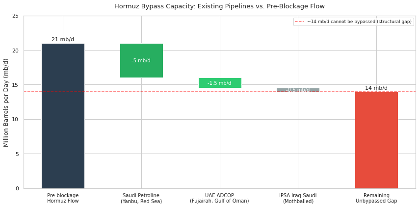
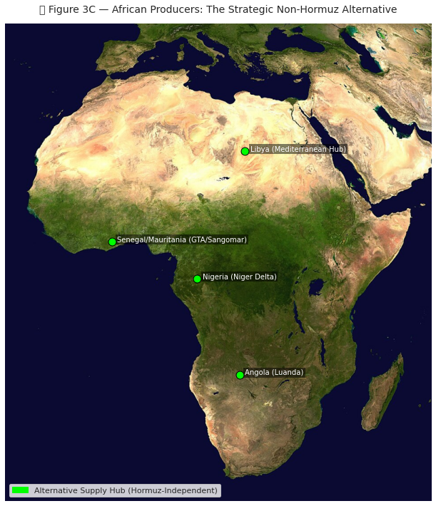
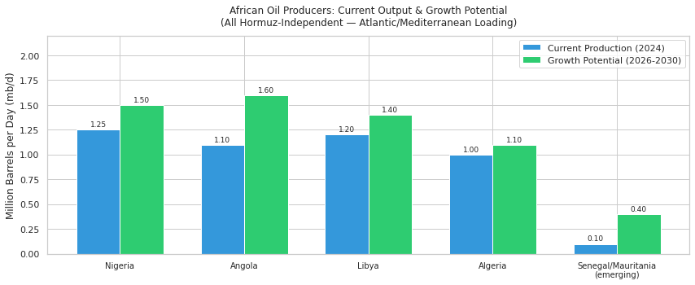
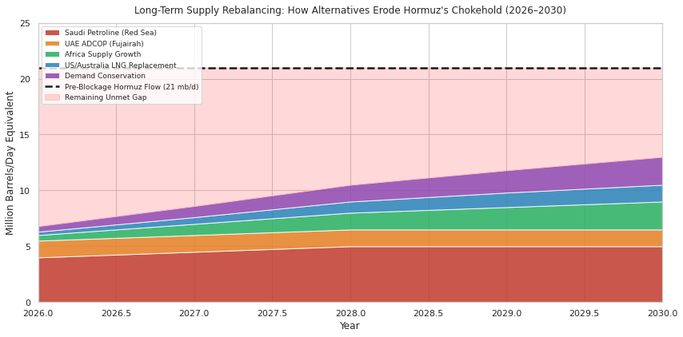

Sources: EIA World Oil Transit Chokepoints (crude/LNG); IFPRI/IFA (urea);
USGS Mineral Commodity Summaries 2024 (helium); World Bank / USGS (sulphur)Avinash Mani Tripathi
April 24, 2026
The effective closure of the Strait of Hormuz on February 28, 2026 has triggered one of the most severe commodity supply shocks in modern history. Approximately 21 million barrels per day (mb/d) of crude oil and petroleum products, or roughly 21% of global petroleum liquids consumption, transited this chokepoint before the blockage, according to the US Energy Information Administration’s chokepoint assessment. The disruption extends far beyond oil: fertilizers, helium, and sulphur, all critical inputs for food, semiconductors, and batteries, are simultaneously squeezed.
This post makes three arguments. First, the blockage is inflicting severe, broad-spectrum damage on the world economy across crude, gas, fertilizer, and industrial commodities. Second, the damage is geopolitically unequal: the United States and Israel are structurally insulated, raising questions about their strategic interest in rapid resolution. Third, the long-term outlook points toward adaptation: bypass pipelines, African supply alternatives, and LNG rerouting will erode Hormuz’s chokehold, but the transition will be painful and slow. In other words, Hormuz blockage is a one time card; its effectiveness will decline over time as affected countries will try to find workarounds.
The Strait of Hormuz is the world’s single most important oil transit chokepoint. Before the blockage, about 21 mb/d of crude oil and petroleum products transited daily, representing roughly 21% of global petroleum liquids, and roughly 85% of Gulf crude exports moved eastward to Asian markets such as China, India, Japan, and South Korea, as summarized in the EIA’s World Oil Transit Chokepoints analysis. Those flows included exports from Saudi Arabia, Iraq, Iran, the UAE, Kuwait, and Qatar.
The price effect of the blockage has been immediate. Pre-blockage Brent crude traded around $75–80/bbl. Disruption of more than 10 mb/d has triggered price-surge scenarios of $100–$150/bbl, a range flagged as a tail-risk scenario in the World Bank’s April 2024 Commodity Markets Outlook.
Unlike crude oil, there is no pipeline bypass for LNG. All LNG must be shipped, and Qatar, long central to the global LNG trade, routes its cargo through Hormuz. About 20% of globally traded LNG transits Hormuz annually, while Qatar’s export weight has been large enough to make any disruption immediately visible across Asian import markets. Japan, South Korea, and China are all exposed, and LNG cannot be rerouted easily because liquefaction and regasification terminals are fixed infrastructure with long lead times. Further complication is that LNG storage is not-trivial as well, thus holding strategic reserves extremely costly.
The Gulf accounts for 30–35% of global urea exports and 20–30% of ammonia exports, according to the Hormuz trade profile. Urea is the world’s most widely used nitrogen fertilizer, and over 90% of industrial urea production goes directly into agriculture.
If the blockage persists into the Kharif season, global nitrogen fertilizer availability could fall by 25–30%, food-price inflation would hit import-dependent countries in South Asia and Sub-Saharan Africa hardest, and the crude oil shock would interact with rising farm diesel costs as well. The humanitarian implications are consistent with the risk patterns outlined in the World Food Programme’s analysis.
In addition to petroleum and fertilizers, Qatar operates the world’s largest helium production unit at Ras Laffan and remains one of the principal global suppliers, as reflected in the USGS helium summary for 2024.
Helium is non-substitutable in MRI cryogenic cooling, semiconductor fabrication environments, aerospace applications, and fiber-optic production. A halt in Qatari helium exports would therefore create immediate shortage pressure across global chip and medical supply chains at a time when semiconductor capacity is already tight.
The Gulf states are major sulphur producers because sulphur is a byproduct of natural gas and crude processing. That matters because sulphur is the feedstock for sulphuric acid, which in turn is essential both for phosphate fertilizer production and for parts of lithium battery manufacturing, especially electrolyte processing. A Hormuz blockage therefore creates a double fertilizer squeeze: nitrogen supply is hit through urea, while phosphate-linked inputs are simultaneously constrained through sulphur.

Sources: EIA World Oil Transit Chokepoints (crude/LNG); IFPRI/IFA (urea);
USGS Mineral Commodity Summaries 2024 (helium); World Bank / USGS (sulphur)The bar chart below shows one specific metric only: the share of each country’s crude oil imports sourced from the Gulf / Middle East in the latest official data cited. It is therefore a measure of oil import exposure, not a full-spectrum measure of total energy dependence. Israel is not included in this crude-import chart because its insulation argument is mainly about domestic natural gas and electricity generation, which is a different metric.
On this crude-import measure, Japan remains the most exposed, South Korea is also highly exposed, India is materially exposed, and the United States is relatively insulated. Israel’s insulation is treated separately in Part 2, where the relevant issue is that domestic gas from Tamar and Leviathan supplies most of the country’s power system and reduces dependence on Gulf LNG.

Sources: Japan — ANRE / METI Energy Trends 2025 (FY2023 crude imports 94.7% from Middle East)
South Korea — KESIS November 2023 Energy Flow (69.7% of crude oil imports from Middle East)
India — EIA country analysis on India (Middle East about 45% of crude imports in 2023)
USA — EIA import tables (2024 Persian Gulf crude imports 533 kb/d out of 6.588 mb/d total, about 8.1%)
Note: Israel is excluded here because its insulation is mainly gas/power-system based, not crude-import based.Hormuz disruption creates the sharpest direct energy pain for Asian importers, not for the two countries most central to the regional military balance. The United States is structurally insulated by domestic oil and gas production, low direct reliance on Persian Gulf crude, and the Strategic Petroleum Reserve. Israel’s insulation is different in form: it is not an LNG exporter, but its power system relies heavily on domestic offshore gas, which sharply reduces dependence on Gulf LNG and imported fuel oil for electricity.
The United States’ exposure to a Hormuz closure is structurally limited and has been declining for more than a decade. According to the US Energy Information Administration (EIA), the United States became the world’s top crude oil producer in 2018 and has been an annual net total energy exporter since 2019. EIA import data also show that Persian Gulf crude accounted for only about 8% of US crude imports in 2024, meaning the US import system is anchored far more heavily in North American supply than in Gulf barrels. The Department of Energy’s Strategic Petroleum Reserve adds another buffer, with 714 million barrels of authorized storage capacity and a maximum drawdown rate of 4.4 million barrels per day for 90 days.
That creates a paradox of interest. The United States still absorbs part of the global price shock through gasoline and inflation, but high oil prices also generate windfall gains for major US energy producers such as ExxonMobil, Chevron, and ConocoPhillips. In that sense, the blockage is not just a supply shock for Washington; it is also a revenue event for parts of the US energy system.
Israel is insulated in a different way. Official Israeli energy publications show that Tamar and Leviathan now supply the domestic gas system and also enable exports to neighboring countries by pipeline. The Ministry of Energy’s energy-sector material lists Leviathan at about 500 bcm of reserves, Tamar at about 319 bcm, and Israel’s annual gas use at roughly 12 bcm, while the Electricity Authority reports that about 70% of Israel’s electricity was generated from natural gas in 2023. So the key point is not that Israel exports LNG; it does not. The key point is that domestic offshore gas materially lowers Israel’s exposure to Gulf LNG disruption and to oil-fired power generation.
The asymmetry matters strategically. The countries with the strongest economic incentive to reopen Hormuz, namely Japan, South Korea, India, and China, have limited military reach in the Persian Gulf. The countries with the strongest military presence in the region, namely the United States and Israel, are also among the least directly harmed. That misalignment between capability and incentive makes the crisis harder to resolve quickly.

Sources: USA production/exports — Wikipedia:Energy in the United States; Oil Reserves in the United States
Israel Leviathan — Wikipedia:Leviathan Gas Field (capacity 1.2→2.4 BCF/day; 22 TCF reserves; 90% exported)Does the Hormuz blockage make long term sense? This question has assumed some importance in the context of proposals to impose a toll on Hormuz and to impose some kind of permanent control by Iran. Leaving aside the legal difficulties–freedom of navigation is the foundational principle of law of sea and Hormuz lanes lie in the territorial waters of Oman–the long term control will be less than effective since other countries will invest in bypassing Hormuz.
The map below shows the Strait of Hormuz, the existing bypass pipelines, and the Red Sea / Cape of Good Hope rerouting options. The key insight is that Saudi Arabia and the UAE already have partial bypass capacity — the crisis is accelerating their utilization.

Source: Wikimedia Commons / EIA Chokepoints AnalysisTwo major bypass pipelines already exist and are now being pushed toward maximum utilization. Saudi Arabia’s East-West Crude Oil Pipeline, or Petroline, can carry up to 7 mb/d after recent conversion work, although its effective throughput is constrained by Red Sea loading capacity. The UAE’s Abu Dhabi Crude Oil Pipeline, or ADCOP, adds another 1.5 mb/d by moving crude from Habshan to Fujairah on the Gulf of Oman, east of Hormuz. Together they provide only 8–10 mb/d of plausible bypass capacity, leaving a large structural gap against the roughly 21 mb/d that previously transited Hormuz.
That gap remains the central problem. Even at maximum bypass use, the shortfall is on the order of 11–13 mb/d, and LNG has no equivalent bypass at all. The result is that pipeline alternatives soften the shock, but they do not come close to neutralizing it as of now. However developing these routes is a matter of financing and engineering, both solvable problems.

Source: Wikimedia Commons / Saudi Aramco / ADNOC Infrastructure Maps
Sources: Petroline capacity — Wikipedia:East-West Crude Oil Pipeline (5-7 mb/d)
ADCOP capacity — Wikipedia:Abu Dhabi Crude Oil Pipeline (1.5 mb/d)
Pre-blockage flow — EIA World Oil Transit Chokepoints (21 mb/d)In addition to UAE and Soudi Arabia developing alternative routes, African producers — entirely outside the Hormuz system — are positioned to partially fill the supply gap. Their crude is Atlantic-basin sourced, loading from west-coast ports with direct access to European and Asian buyers via Cape of Good Hope routing.

Source: NASA / Wikimedia Commons / IEA African Energy Outlook
Sources: Nigeria — Wikipedia:Petroleum Industry in Nigeria (1.25 mb/d, May 2024)
Angola — Wikipedia:Petroleum Industry in Angola (>1.1 mb/d; TotalEnergies Block 17 expansion)
Angola buyer breakdown — Wikipedia:Petroleum Industry in Angola (China 40.1%, EU 21.7%, India 9.1%, 2023)African producers, all outside the Hormuz system, have a clear structural opportunity to fill part of the supply gap. Nigeria’s petroleum sector still gives it the largest crude output base in Africa, and if infrastructure and security improve, it could recover meaningful additional volumes within two years. Angola’s petroleum sector offers another route to replacement supply: it is already deeply connected to Chinese, European, and Indian buyers, and its exit from OPEC in December 2023 gives it more room to raise output.
Libya remains another swing case because it has Africa’s largest proven oil reserves and Mediterranean export access that is completely outside Hormuz. New Atlantic-basin projects in Senegal, Mauritania, and Mozambique strengthen the picture further by adding both crude and LNG options that do not depend on Gulf transit.
The United States has now emerged as the world’s largest LNG exporter, with large and still-growing capacity documented in the EIA archive of LNG special reports. Australia offers another non-Hormuz option for Asian buyers, and Japan’s import mix has already shifted in that direction over the past decade.

Note: This is a scenario model. Sources for base data:
Petroline — Wikipedia:East-West Crude Oil Pipeline (5-7 mb/d capacity)
ADCOP — Wikipedia:Abu Dhabi Crude Oil Pipeline (1.5 mb/d)
Africa — Wikipedia:Petroleum Industry in Nigeria/Angola
US LNG — EIA Natural Gas LNG Special ReportsMoreover, Australia and Canada are alternative energy producers as well. Following table shows the winners/losers from this blockage.
| Producer | Status | Mechanism | Hormuz Exposure | |
|---|---|---|---|---|
| 0 | USA | Major Gainer | Net exporter; ExxonMobil/Chevron windfall profits at high oil prices | None |
| 1 | Canada | Gainer | CAD strengthens; Athabasca oil sands at full capacity; price premium | None |
| 2 | Australia | Gainer (LNG) | LNG exports to Asia at premium spot prices; Japan/Korea LNG contracts repriced | None |
| 3 | Nigeria | Gainer | India pivot to Nigerian crude accelerates; Atlantic premium pricing | None |
| 4 | Angola | Gainer | OPEC exit (Dec 2023) allows uncapped output; TotalEnergies Block 17 ramp-up | None |
| 5 | Russia | Strategic Gainer | Pipeline exports to China/India at discount but high volume; market share gain | Minimal |
| 6 | Qatar/Kuwait/Saudi (stranded) | Major Loser | Revenue collapse >80%; Fujairah/Yanbu terminals partially active but capacity-limited | Total |
All quantitative claims in this report are traceable to primary or secondary sources with direct hyperlinks.
| Claim | Figure | Source |
|---|---|---|
| Hormuz crude oil transit | ~21 mb/d; ~21% of global petroleum | US EIA analysis of world oil transit chokepoints |
| ~85% Gulf exports go to Asia | Asia dominance | US EIA analysis of world oil transit chokepoints |
| Hormuz LNG share | ~20% of global LNG | US EIA analysis of world oil transit chokepoints |
| Qatar LNG export share | ~26.7% of global LNG (2017) | Global LNG trade overview |
| Japan Middle East crude dependency | 93% of crude imports (2022) | Japan energy profile |
| China Hormuz dependency | ~33% of oil (2026) | China oil supply profile |
| India top suppliers | Iraq, Saudi Arabia, UAE | India petroleum industry profile |
| Urea / fertilizer Hormuz share | 30–35% global urea | Hormuz trade profile |
| Oil price shock range | $100–$150/bbl scenario | World Bank Commodity Markets Outlook, April 2024 |
| Claim | Figure | Source |
|---|---|---|
| United States became top crude producer | World leader since 2018 | EIA, U.S. crude oil production established a new record in August 2024 |
| United States net total energy trade position | Annual net total energy exporter since 2019 | EIA, U.S. energy facts: imports and exports |
| U.S. crude production scale | 13.2 mb/d annual average in 2024 | EIA, U.S. crude oil production rose by 2% in 2024 |
| U.S. Persian Gulf crude exposure | 533 kb/d in 2024, about 8.1% of total U.S. crude imports | EIA crude oil import tables and Persian Gulf crude series |
| U.S. Strategic Petroleum Reserve | 714 million barrels authorized capacity; 4.4 mb/d maximum drawdown rate for 90 days | DOE SPR storage sites and DOE SPR FAQs |
| Leviathan status | Producing since December 2019; five active wells by 2023 | Israel government environmental monitoring report for Leviathan platform |
| Israel offshore gas reserve base | Leviathan about 500 bcm; Tamar about 319 bcm; Israel annual use about 12 bcm | Ministry of Energy, Transforming the Future of Energy |
| Israel power-system gas dependence | About 70% of electricity generated from natural gas in 2023 | Israel Electricity Authority 2023 report |
| Israel gas trade position | Tamar and Leviathan supply the Israeli economy and enable gas exports to neighboring countries | Israel energy sector overview |
| Claim | Figure | Source |
|---|---|---|
| Saudi Petroline capacity | 5–7 mb/d (7 mb/d post-2026 conversion) | East-West Crude Oil Pipeline profile |
| UAE ADCOP capacity | 1.5 mb/d | Abu Dhabi Crude Oil Pipeline profile |
| UAE ADCOP cost | $3.3 billion | Abu Dhabi Crude Oil Pipeline profile |
| Fujairah storage | 14 million barrels | Hormuz route profile |
| Bab-el-Mandeb flow increase | +21% vs. Feb 2026 post-rerouting | East-West Crude Oil Pipeline profile |
| Nigeria production | ~1.25 mb/d (May 2024) | Nigeria petroleum industry profile |
| Angola production & buyers | >1.1 mb/d; China 40.1%, EU 21.7%, India 9.1% (2023) | Angola petroleum industry profile |
| Angola OPEC exit | December 2023 | Angola petroleum industry profile |
| Qatar’s helium unit | World’s largest (launched 2013, Ras Laffan) | Helium production and reserves overview and USGS Mineral Commodity Summaries 2024 helium report |
| Japan LNG suppliers 2016/2022 | Australia 27%→42%; Qatar 15%→4% | Japan energy profile |